Fuel Finder UK is a free app that compares live petrol and diesel prices at over 6,000 UK stations. It uses the official UK Government CMA dataset — updated every 30 minutes — so you always see real, verified prices from retailers like Tesco, Asda, BP, and Shell. No sign-up needed, available on Android and iOS.
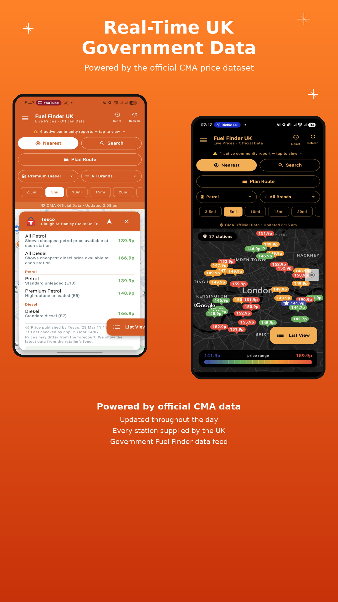
Powerful tools to find the cheapest petrol and diesel, plan routes, track your cars, and more.
Open the app and immediately see the cheapest fuel station near you — ranked by price, with distance and directions. Colour-coded map markers make it easy to spot the best deals at a glance.
Prices refresh from 14 official CMA retailer feeds throughout the day so you always have the latest.
Set a destination and find the cheapest fuel stops along your entire journey. Save big on long trips.
Drivers report out-of-fuel stations, queue times, and issues in real time. Vote and verify to help everyone.
E10 petrol, premium petrol, standard diesel, premium diesel, B10, and more — every grade the CMA tracks.
Only want Tesco? Prefer Shell? Filter stations by brand to see exactly the ones you care about.
Light, dark, or AMOLED theme with 6 accent colours. Make the app your own.
Tap any station to see full tank cost, price history, and trends. Spot pricing errors and report them to the CMA.
No subscription, no paywall, no account. Just download and start saving on every fill-up.
Everything you need to stay on top of car ownership, right inside Fuel Finder UK. Track MOT history, ULEZ status, tax reminders, and fill costs — all in one place.
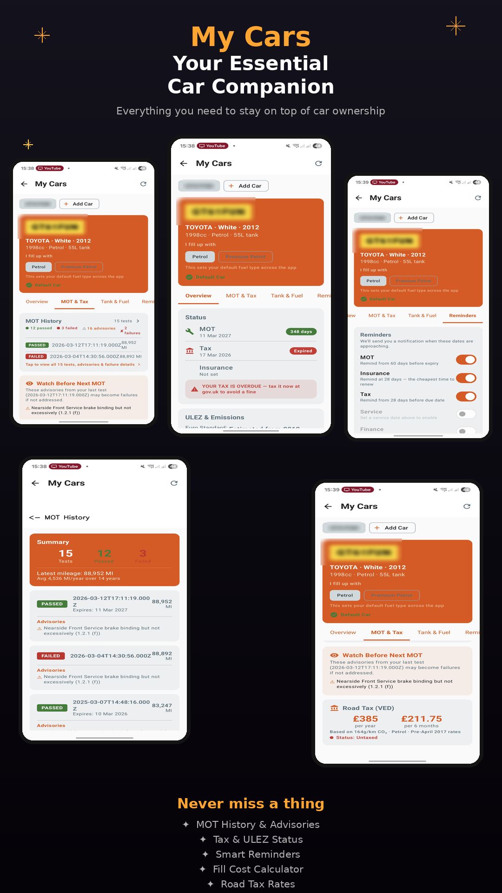
Powered by drivers like you. Report outages, queues, and fuel issues at any station — and see what others have flagged before you drive there.
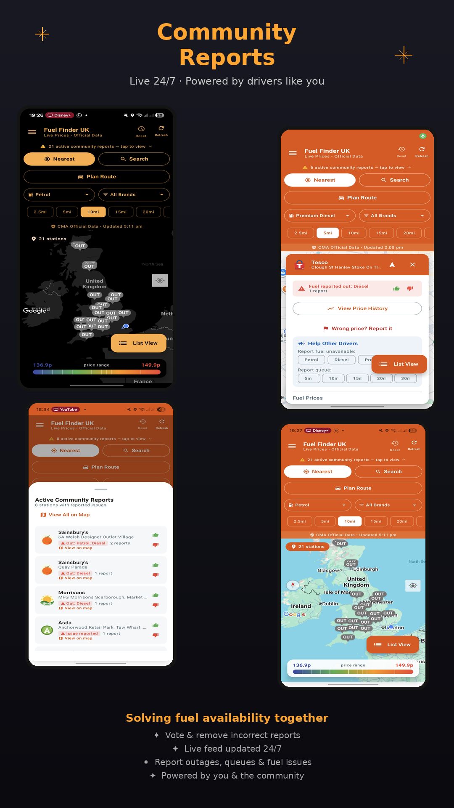
Heading somewhere? Set your destination and Fuel Finder UK finds the cheapest stations along your entire journey — not just near where you are right now.
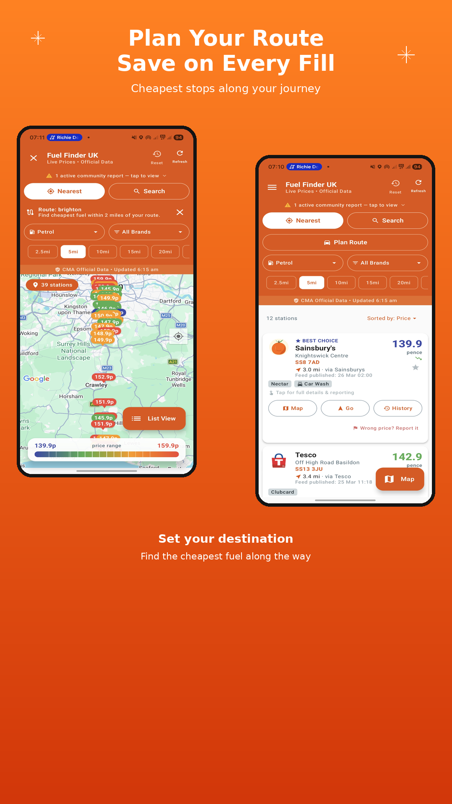
Find the cheapest fuel right from your car's dashboard. Sort by price or distance, filter by fuel type and brand, and navigate directly to any station — all hands-free while you drive.
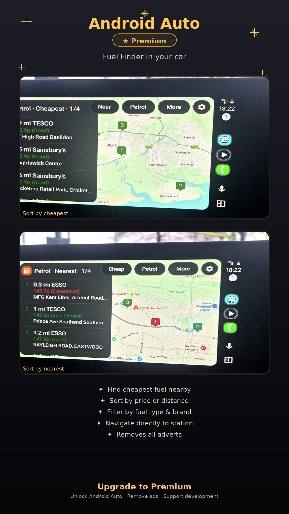
The latest iOS update brings the features Android users love — Community Reports, full station details with facilities, and My Car with MOT & tax tracking — all built natively for iPhone and iPad.
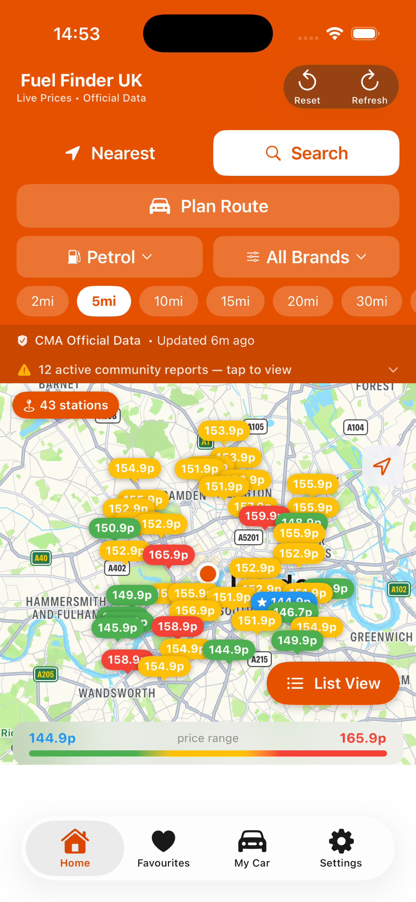
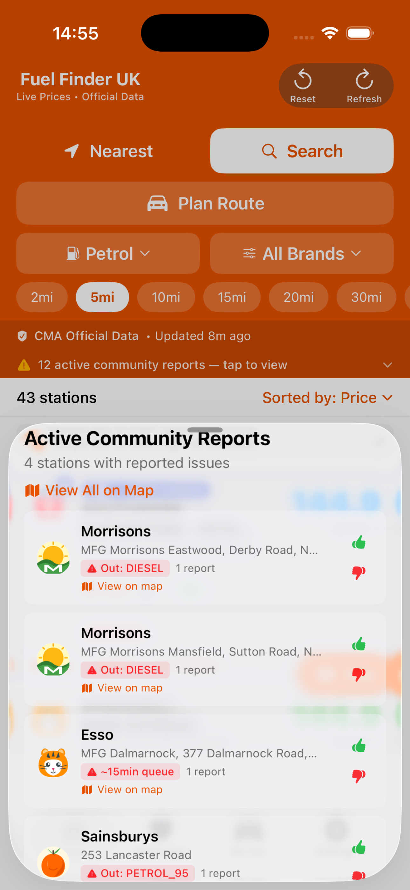
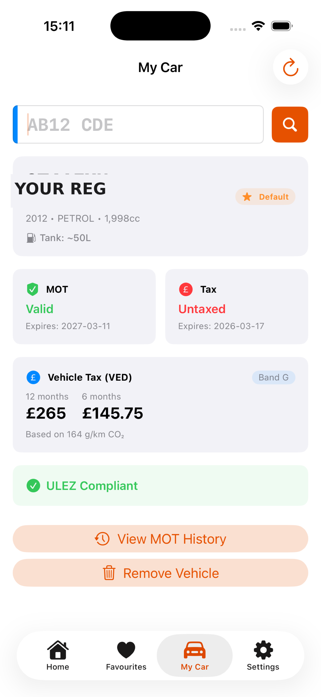
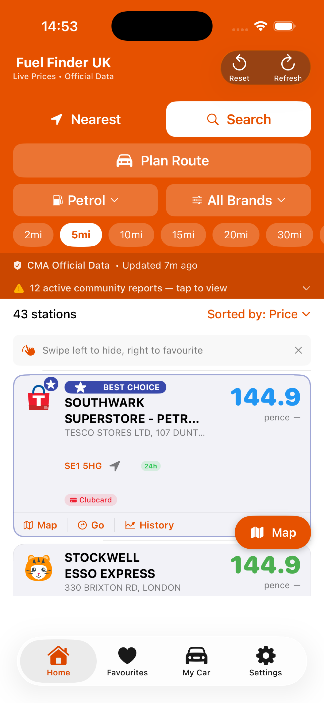
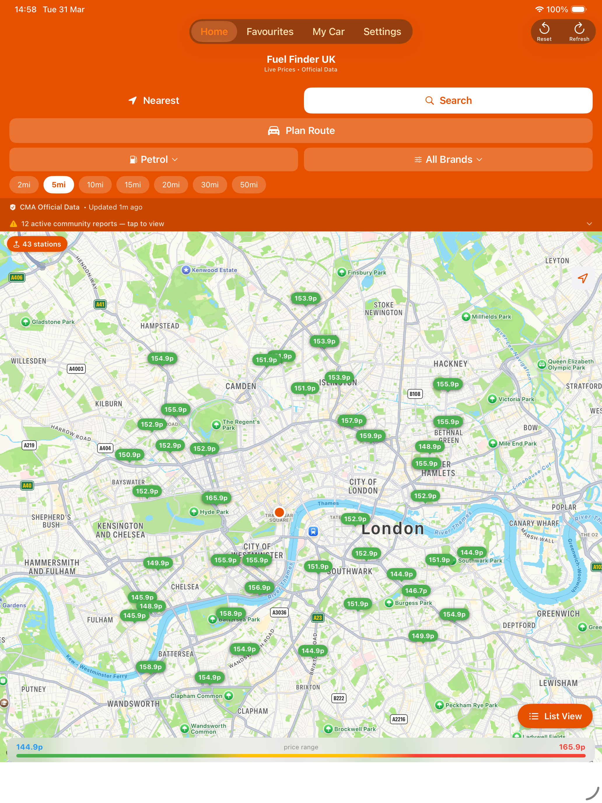
Also available on iPad — see the full UK fuel map on a bigger screen.
Explore the full Fuel Finder UK experience on both platforms.
Drag or swipe to scroll →
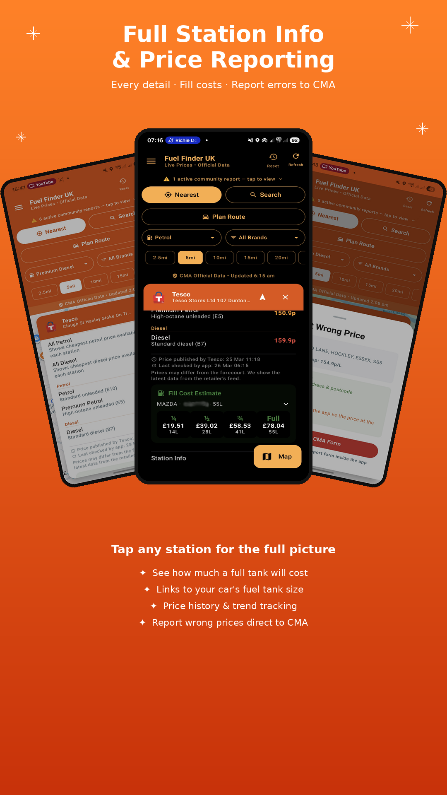
Drag or swipe to scroll →
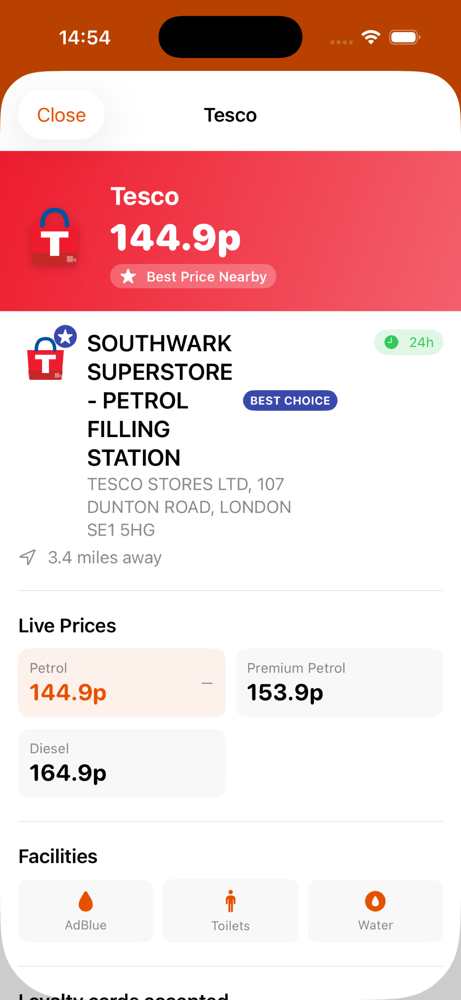
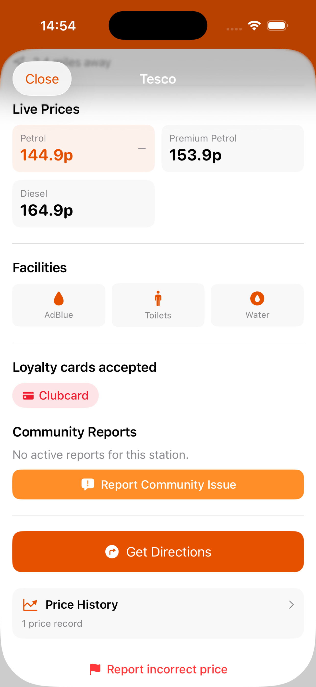
Drag or swipe to scroll →
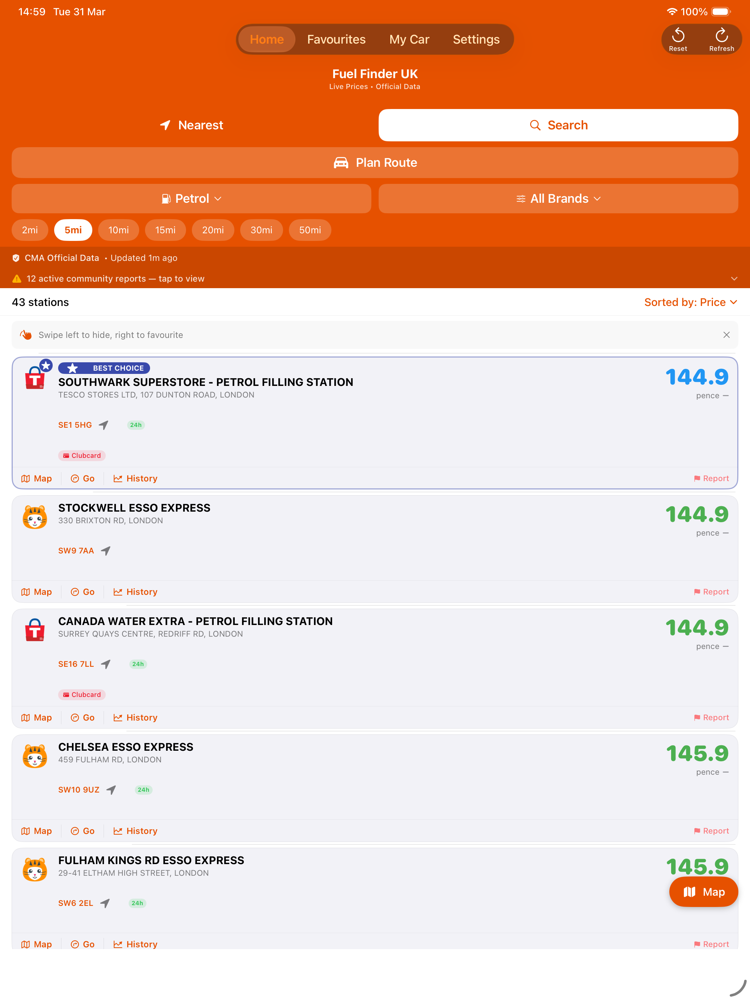
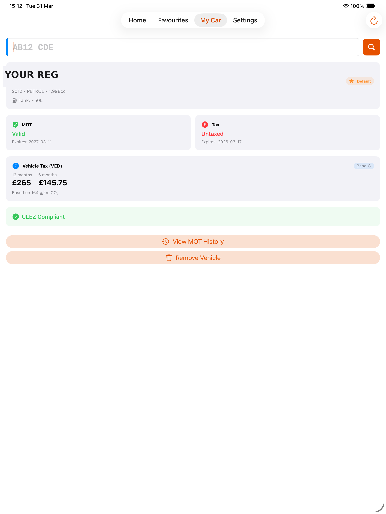
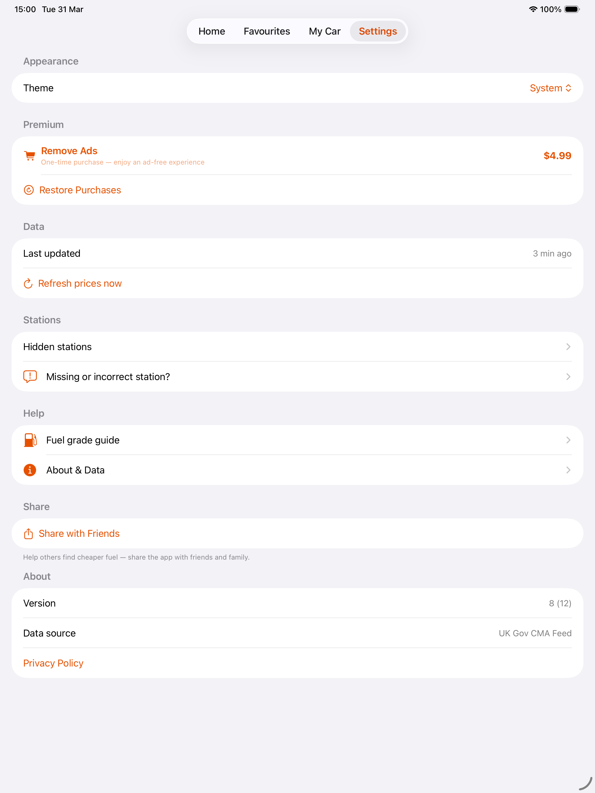
Fuel Finder UK only shows stations that appear in the official UK Government CMA fuel price dataset. Retailers with 100+ sites are legally required to submit prices. Smaller retailers can voluntarily join. If your station isn't listed, you can encourage them to register with the CMA scheme or report it to the CMA. Coverage grows as more retailers join — currently 6,000+ stations and rising.
From London to Edinburgh, Cardiff to Belfast — we've got you covered.
6,000+ stations and growing as more retailers join the CMA scheme.
Fuel Finder UK was created by Darren Fernandez, a UK-based indie developer, during the cost-of-living crisis. The goal was simple: take the power of official government fuel price data and make it accessible to everyone — right on their phone. What started as a side project to help drivers save money has grown to cover 6,000+ stations across the UK on both Android and iOS.